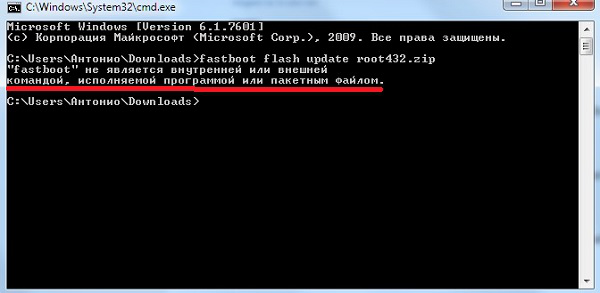
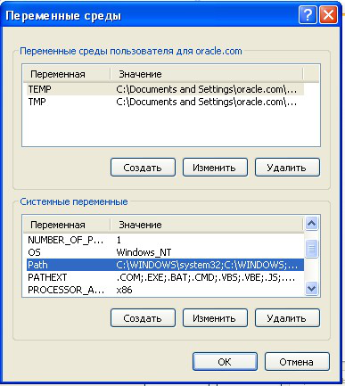
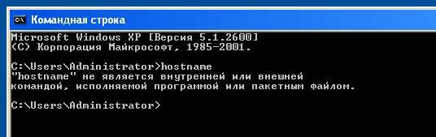
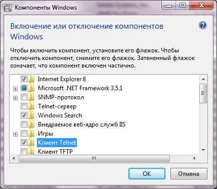

lifehacki.ru
«Имя файла» не является внутренней или внешней командой, исполняемой программой или пакетным файлом
При попытке открыть какую-либо команду через окно служебной программы или консоль, вы сталкиваетесь с ошибкой – «Имя файла» не является внутренней или внешней командой, исполняемой программой или пакетным файлом. Система упрямо не открывает файл по каким-то причинам и этот факт очень раздражает. Причиной этого может быть один из нескольких вариантов: неправильно указан путь к файлу и отсутствие компонента в системе вообще, т.е по указанному адресу его не существует.

Ошибка в системной переменной
Основные причины, по которым появляется ошибка «не является внутренней или внешней командой»
Как уже было сказано, одна из причин заключается в неправильном указании пути к открываемому файлу. Обычно путь к файлу прописан в переменной «Path» в системе, должен быть указан строгий путь к директории, в котором размещены нужные файлы. Если имеются какие-то ошибки в настройках при указании пути в переменной, либо при указании имени файла, то система будет выдавать именно такую ошибку – «имя файла» не является внутренней или внешней командой, исполняемой программой.
Первым делом необходимо указать точный путь переменной «Path» операционной системе, чтобы не возникало ошибок при открытии файла. Для этого нужно наверняка знать расположение папки. К примеру, обратимся к программе, которая в дальнейшем будет работать с исполняемым файлом в определенной папке.
Переменная «Path» — это переменная операционной системы, которая служит для того, чтобы найти указанные исполняемые объекты через командную строку или терминал. Найти ее можно в панели управления Windows. В новых версиях Виндовс и других ОС указание вручную обычно не требуется.

Системная переменная Path
Указываем правильный путь в переменной path на ОС Windows 7
Чтобы правильно указать путь необходимо знать точное расположение файла. Если файл программы, который нужно открыть лежит на диске в С:\Program Files\Java\jdk 1.8.0.45\bin, тогда этот путь нужно скопировать и указать в системной переменной для последующего открытия.

Командная строка
В том случае, если ошибка будет появляться снова, попробуйте перенести программу в рабочие директории диска с установленной операционной системой, например /System32. С этой директорией Виндовс работает чаще.
Также ошибки возникают из-за отсутствия компонентов программы. Устранить их можно дополнив нужными. Для примера возьмем компонент «Telnet». Чтобы его включить, перейдите:

Компонент Windows Telnet
Задать переменную «Path» в ОС Windows 8/8.1/10